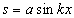
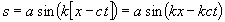
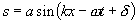
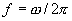
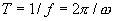
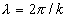

Vågrörelselära
Vad är en våg?
I motsats till de flesta begrepp inom fysiken har alla(?) en uppfattning om vad en våg är. Vi ska nu försöka göra en systematisk genom gång av företeelser vi kallar vågor och se vad de har gemensamt, för att därefter kunna ställa upp en defininition och en matematisk modell.
Exempel på vågor
Ytvågor (tex havsvågor)
Mekaniska vågor (t ex ljud)
Elektromagnetiska vågor (t.ex ljus)
Vad har nu dessa gemensamt som kan användas som definition? Ofta kommer associationer till periodiskt beteende eller till och med sinusform upp. Det finns emellertid gott om vågor som inte alls är periodiska. Svallvågen från en snabb båt består av 2-3 vågberg som sinsemellan är olika, och ett än mer extremt exempel är den våg som bildas runt en ljudbang. Det gemensamma är faktiskt att man har ett normaltillstånd (havsytan, mediet i vila etc.) som utsätts för en störning. Om denna störning fortplantas utan samtidig materietransport är den en våg.
Tanke: Rör sig inte vattnet i vågen riktning på havet? ..och strömmar inte luften i ljudets riktning förbi stämbanden? Utan materietransport??
!!!Hur ska vi då matematiskt beskriva en våg? Vi börjar svara på frågan genom att titta på en endimensionell våg, dvs en störning s som är en funktion av läge, x, och tid, t.
Vi börjar med att betrakta en sinusformad störning vid tiden t=0. Den kan då skrivas

där k uppenbarligen har något med våglängden att göra. Exakt vad återkommer vi till.
Nu ska vi se vad vi behöver göra för att vågen ska röra sig med hastighet c i positiv x-led. För att göra detta behöver vi använda ett trick:
Låt X vara en koordinat som följer med vågen (med samma hastighet, c). Då kommer uttrycket ovan att beskriva vågen vid alla tidpunkter (fast med X i stället för x). Om vi nu vill transformera från ett rörligt koordinatsystem (X) till ett fixt (x), så innebär det att x=X+ct (titta i mekboken på galileitransformation om du inte kommer ihåg) Samma störning uttryckt i det fixa koordinatsystemet x blir nu:

I alla svängningar (fjädrar o.d.) brukar det som står framför t kallas
w, så det gör vi också dvs w =kc. Vidare kan det vara bra att ge vågen en möjlighet att inte ha ett nollställe vid t=0 och x=0. Detta kan göras genom att lägga till en konstant, d , i argumentet (fasen) till sinusuttrycket:
En våg av denna typ brukar kallas en harmonisk våg. I princip kan alla andra vågor matematiskt byggas upp som summor av sådana. Vi kommer nu ihåg (kanske) att
w brukar kallas vinkelfrekvens och mäts i rad/s. Till denna storhet knyts i mekaniken frekvensen som mäts i /s eller Hz, som anger antal hela svängningar per sekund. Vidare har vi perioden som anger tiden mellan två vågberg, och mäts i _ _ _.Kommer vi ihåg detta och vad det innebär är det lätt att identifiera samma storheter för beskrivning i rummet (i stället för tiden):
k som står före x borde alltså mätas i rad/m (jfr
w ), och vi borde ha en storhet , l, som anger sträckan mellan två vågberg, som fås som . Vi brukar kalla k för vinkelrepetens (gammalt namn: cirkulärt vågtal) och l kallas (som Du säkert vet?) våglängd.Använder vi nu informationen efter "tricket" ovan borde vi kunna härleda gymnasieformeln för sambandet mellan våglängd och frekvens för en våg. Gör det! Tryck
här om du vill fuska!Vi kan vidare erbjuda en liten
matlabsnutt , där man kan leka med våglängd, amplitud och + eller i fasen. Det sistnämnda avspeglar det faktum att - (som i ex ovan) betyder att vågen rör sig i positiv x-led, medan + innebär negativ x-led. Opedagogiskt men sant. Vill man bara titta på en våg i taget sätter man amplituden för den andra till 0!Obs att det vi visat här är vågor i en dimension, dvs sådana som inte sprids ut över större yta med ökande avstånd till vågkällan. Exempel på sådant ljud är ljud som leds i en ståltråd, eller ett rör. Det tredimensionella fallet kommer vi tillbaka till för de enskilda fallen.
Slutligen (på denna sida) vill vi också inkludera den differentialekvation som brukar kallas vågekvationen. I en dimension ser den ut så här:

Observera att det inte ankommer på oss att lösa denna. Vi kommer i första hand att använda den för att bestämma vissa vågegenskaper, som t.ex. våghastigheten c.
Till
nästa sida (Ljud) )Till
nästa kapitel (Geometrisk optik)Till
innehållsförteckningen